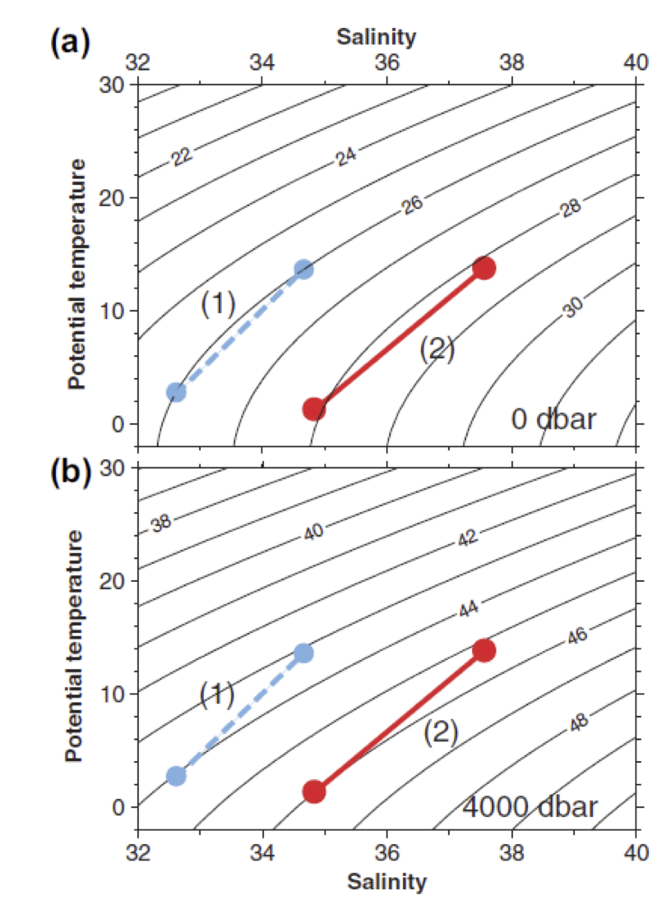

Exercise sheet 1#
Bathymetry
Make a bathymetric map of the world’s oceans. Identify 2 sills (regions of shallow water separating two ocean basins, e.g. the Mediterranean and the Atlantic, the Arctic and the Atlantic, the Arctic and the Pacific).
For this exercise, you should use Java Ocean Atlas (https://joa.ucsd.edu/dpo/). To learn how to use it, follow example 2A, 2B and 2C.
Density
The density of seawater is approximate 1025 kg/m\(^3\). Using hydrostatic balance and this density, find the pressure at a depth of 4000m. (Use gravity \(g=9.8\) m/sec\(^2\).)
Stratification
Why does North Atlantic deep water stratify below Mediterranean water in the Atlantic Ocean, even though the initial densities in the Denmark Strait and the Strait of Gibraltar are approximately the same? (3 points)
Stability
The stability of the water column is defined as the vertical density gradient:
\[\frac{1}{\rho_0}\frac{d\rho}{dz}\ ,\]where \(\rho_0\) is a constant reference density and \(\rho\) is the density. Do we use density or potential density for \(\rho\) and why?
Seawater components
Explain the terms “conservative” and “non-conservative” tracers/components of seawater. Give two examples of each. (2 points)
{kind=link}